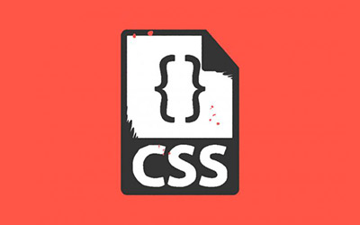
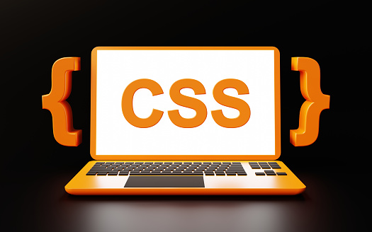

CSS (Hojas de Estilo en Cascada) es un lenguaje utilizado para describir la presentación de un documento HTML. Con CSS puedes controlar el diseño visual de una página web, desde los colores y tipografías hasta el espaciado y la disposición de los elementos.
CSS permite separar el contenido (HTML) de la presentación visual, lo que facilita el mantenimiento y la evolución de las páginas web. También es esencial para crear diseños responsivos, adaptables a diferentes dispositivos.
| Lenguaje | Propósito | Ejemplo |
|---|---|---|
| HTML | Estructura el contenido de una página web | <p>Este es un párrafo</p> |
| CSS | Da estilo a la estructura de la página web | p { color: blue; } |